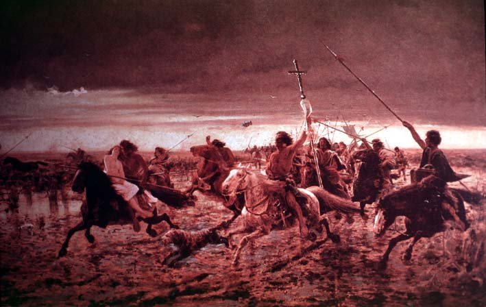

|
|  |
|
Angel Della Valle, La vuelta del malón, 1892
|
By far the most iconic visual representation of the indigenous body at the end of the nineteenth century, though, is Angel Della Valle´s La vuelta del malón (The Raiders' Return, 1892). Loosely inspired by accounts of an Indian 'invasion' of the frontier town of Azul in the early 1870s, the painting, which was concluded in 1892 –the year of the centenary of the 'discovery' of America– and exhibited at the Chicago World´s Fair of 1896 alongside various works on U.S. frontier themes, develops a frontier mythology in the safe distance of an 'afterwards' that looks nostalgically towards a turbulent past. The centre –not so much visually as in terms of the public scandal the painting caused on its first exhibition– is occupied by the couple of Indian horseman and white captive, who leans against the dark man´s chest in an expression that troubled the pictures´ first critics (had she fainted? or fallen asleep? why wasn´t she struggling?) Like Iracema, La vuelta del malón is an erotic painting, but here it is a white woman who is offered up to the male gaze through the desire of the other. The body of the other, then, towards the end of the century also becomes a site of fantasy, and his gallop towards the horizon a form of release of the repressed wishes of the self.
|